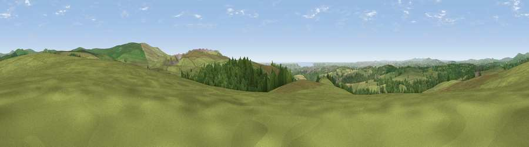

Viewpoint near Shaugh Prior
#4476 in England · top 8% of its area beats it · near Shaugh PriorWhere it is
The exact computed spot (SX 54350 64550). Click the marker for map links.
The view, rendered

A 360° render of this exact spot computed from the terrain model, tree cover and land cover — summer colours, afternoon light, calibrated against photographs of famous viewpoints. Real trees, hedges and buildings will differ in detail.
The panorama
Grey silhouette: terrain skyline in each direction (720 bearings, Earth curvature and refraction included). Dashed green: skyline with trees (+15 m) and buildings (+8 m) as obstacles. Blue strip: how far the ground is visible on each bearing.
Where the view opens
Wedge length = distance to the farthest visible ground on that bearing (vegetation-aware). Rings at 10, 25 and 50 km.
What fills the view
66% grassland · 27% woodland · 3% cropland · 2% built-up · 1% water
Angular shares of the visible panorama (visual magnitude), not map area. Landscape diversity 0.39 (0–1 Shannon).
Key numbers
More beautiful places nearby
The staircase of upgrades: each row has a higher view potential than everything closer. Driving times are estimates from straight-line distance, calibrated against real road routing — check an actual route before setting out.
| Place | Direction | Drive | Score |
|---|---|---|---|
| Viewpoint near Shaugh Prior | SW · 1 km | ~3 min | 73.2 |
| Viewpoint near Shaugh Prior | S · 1 km | ~3 min | 77.0 |
| Viewpoint near Lee Moor | SE · 2 km | ~6 min | 82.7 |
| Viewpoint near Downderry | WSW · 23 km | ~38 min | 83.5 |
| Viewpoint near Hope | SSE · 29 km | ~46 min | 84.4 |
| Viewpoint near East Prawle | SE · 36 km | ~55 min | 84.6 |
| Pencarrow Head | WSW · 41 km | ~61 min | 86.0 |
| Viewpoint near Lesnewth | WNW · 50 km | ~72 min | 87.7 |
50.46264, -4.05345 · source: screening · position refined by local search. Computed location — check access rights before visiting.